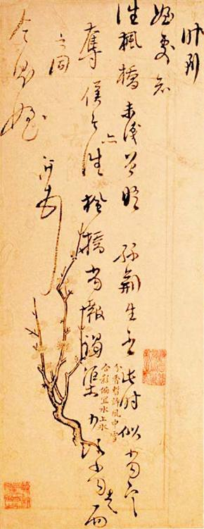
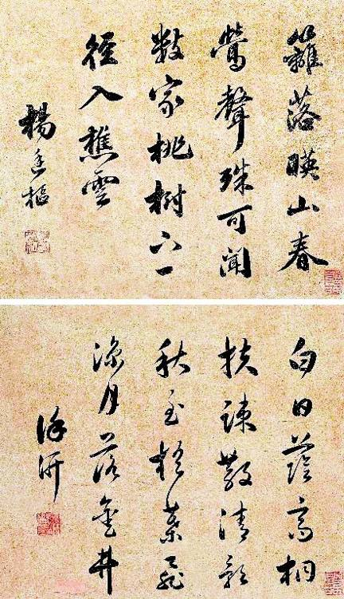
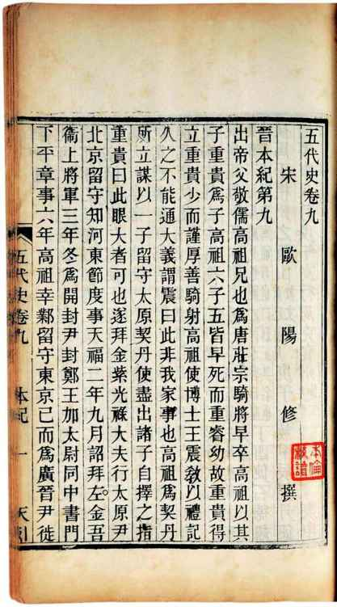

当然，除了历史处境、主题的变化，也要谈道德。对于明代，道德的话题绕不过去，尤当涉及知识分子意识形态的时候。
就此我们先从一个甄辨讲起——至今许多人有误解，以为儒家思想在中国一直居文化领导地位。实际上，二千多年大致只有一半时间如此。
春秋战国，儒家仅列“百家”之一。孔子屡梦周公，其学不行于世；孟子一生，基本在现实中扮演“反对派”角色，忙于争霸的国君也不能用其“王道”。秦，是法家的爱好者，它觉得“儒以文乱法”，于是报以“坑儒”暴行。魏晋间，领一时风骚的士夫，多视儒为酸腐而谑浪之。由隋至唐，文化烂漫，但儒家在其间纵非居于弱势，起码也在苦苦争取稍有利的地位，道、释两家权势都比它大，李姓皇室自命老子后代而崇道，武则天出于打压李氏目的则佞佛，儒家仅在官僚集团部分知识分子中拥有信徒，杜甫、韩愈是两个杰出代表，前者将诗歌创作用于诠释儒家精神，故称“诗圣”，后者文起八代之衰、排斥佛老、为儒家鼓与呼，但终唐一世，文化纷杂多流，无定于一端，儒家绝不享有文化领导权。
故而，直到我们眼下讲述的这段历史为止，儒家确居领导地位的，仅三个朝代：汉、宋、明。汉代初年尚非如此，从武帝用董仲舒起，儒家独尊。两汉之儒，筚路蓝缕，披荆斩棘，丰碑累建，中国之有学术实奠于此，吾族之称汉人、学问之称汉学，允当之至。但此后约七百年，汉代文化取向并未延续，否则也不会有“八代之衰”的喟叹。直到宋儒起来，汉儒衣钵才被传承。但随之又有蒙元百年截断和停顿，以“光复中华”自命的明人，理所当然大力弘扬、踵继宋学，如此二百七十余年，儒家终于稳居领导地位而不可动摇。满清的入主，虽属蒙元旧事重演，却记取了后者的教训，对儒学改歧视为崇隆。
此为儒家二千年简略沉浮史，从中我们看到，它对文化的绝对统治并不如何久远，严格说距今仅七个世纪。而这段时间，恰好与中国历史重心从“分久必合，合久必分”模式移往“夷夏冲突”模式，相吻合、相平行。这绝非巧合。换言之，儒家的思想文化权威地位的确立，与新的历史主题同步，适应、满足、支持了汉族国家意识、民族意识的生长。我认为，它既是中国历史转型和“民族国家”形成的文化产物，也是这一过程明确的表征。
过去，人们将儒学在宋明的绝对统治，视为中国文化趋于封闭、僵化，活力、创造力消失，和所谓“封建性”因袭益重、气息益朽的迹象。此论的由来，是“五四”后对中国自身文化全盘否定，而当时所以觉得可以做此否定，又基于中国在现代性转型中完败于西方的事实——其实就是结果论，既然结果不好，文化就一定是坏的。如今我们知道，线性因果律逻辑，只有极少数情况下才能成立，很多事情，有其因而不一定有其果，知其果也未见得知其因。其实，针对中国历史和文化的现代批判，一开始就无关学术、学理，仅出于迫切的功利需要，即以快刀斩乱麻方式使中国开始革命。
中国的现代转型输给西方，是文化本身的问题，还是有特定的历史原因？西方的现代之路，是不是唯一和必由之路？如无意外干扰，以中国历史和文化原有轨迹，有无可能形成方案不同但殊途同归的现代之路?以我粗浅的了解，都有研究余地。我觉得，宋明之际，中国文化出现了重要异动，中国历史开始了明显有别于过去的叙事、篇章。宋代中国，发生了可能自春秋以来最重要的一次精神思想资源空前大整合，明代则在消化宋学成果基础上，酝酿具有未来意义的新精神格局。两代思想学术的活跃与兴盛，我个人认为，前无古人、后无来者。大师、巨匠辈出，尤其是以学派为特色的思想探索和互动，乃“上下五千年”所仅见。哲学、文艺、史学、宗教、政治、伦理、历算、农学、地理、技作以至命理象数之学，中国所有文化积累，都于此时融汇贯通。而且不止是繁荣而已，更重要的迹象是，于多样化中表现出了超强的思想凝聚能力。理学的诞生，意味着中国第一次出现全国性思想体系。其他划时代思想事件如，儒、释、道在此时实现合流，这是中国精神文明一大进展，突出显示了宋明在文化上的化育力、再生力……
换个眼光，我们从宋明所见，恐怕就不是封闭、僵化，而是在新的历史处境和主题下，以明确的民族意识，构建纯正中国文化体系。借时下术语，宋明是中国“文化认同”的开端。我们发现，在大致相当的时段，中国所发生和经历的，也是欧洲的情形。宋明的复古与文艺复兴，历史内涵与性质十分接近；宋明理学（近年也称“新儒学”）亦如宗教改革之于欧洲，借解释学的方法和途径，对各自传统的核心价值，加以梳理和镀新；参考马克斯•韦伯新教伦理论述，我们感觉，宋明理学与之有并行的精神向度，“一粥一饭，当思来处不易；半丝半缕，恒念物力维艰。宜未雨而绸缪，毋临渴而掘井。自奉必须俭约，宴客切勿流连……”[43]这些写在中国童蒙之书里的日常道理，清教徒们也许会觉得眼熟。

徐汧便笺
古人笔迹中，这类随手写下的字条，最见性情。

徐汧、杨廷枢唱和诗墨
徐、杨同为复社领袖，人生结局亦同，后者“清至不剃发。丁亥四月，时隐山中被执，大骂不屈”，然后被杀。

欧阳修《五代史》
欧阳修《五代史》，为正史单立《死节传》之始。宋代之于中国文化精神，有转折点的意义。中国历史的主要矛盾，自兹从原来的自身内部“分久必合，合久必分”，转到“攘夷尊夏”或曰文明与野蛮冲突方面，之后历次朝代更迭，要么是华夏沦亡，要么是民族复兴，二者必居其一。这时渐形其盛的“士与死”现象，将忠君伦理与文化冲突、民族悲情混合在一起。
知识阶层是国家精神纽带，价值观变化将首先作用和体现在知识者身上。观宋明士风，敬事不懈、求笃致诚，标引道德、极重格调。那是先前所不见的样态，且一日甚似一日，南宋甚于北宋，明代复甚于宋代，以致终于有了海瑞那样的典型。这种人物，似乎只能属于明代，放到其他历史时期，都难免有失协调。
黄仁宇称之“古怪的模范官僚”，用“个人道德之长，仍不能补救组织和技术之短”[44]概括他身上的内在矛盾。道理本身不错，但没有放到合适的时间来讲。
组织和技术的建构，没法发生在道德之前；社会现实的改进，总是有赖思想层面的先期豹变，道德也是思想的一个方面。我们都认为法律比道德可靠，道德可以弄虚作假，法律是刚性规则、不易做手脚（其实不尽然）；所以，我们呼唤法治社会。不过，法律其实要以道德为先导，在不正确的道德下形成的法律，本身就可能是邪恶的；法律自古就有，显然曾有很多旧法因为错误或邪恶而被淘汰、废除，所以在更好的法律出来之前，实际上有赖道德的先行进化。欧美近世政法制度，就明显是先有新的伦理道德提出，再经社会革命和其他实践转化、落实为约定条文。启蒙思想者所谈平等、博爱，新教伦理所倡劳动、节俭、诚敬，都属于道德范畴。
由此可知，尽管明代士夫“个人道德之长”，暂未“补救组织和技术之短”，也仍不失为中国历史的积极进取信号。至于“以熟读诗书的文人治理农民，他们不可能改进这个司法制度，更谈不上保障人权”[45]，此语若加之于彼特拉克、莎士比亚、伏尔泰，其实还不是一样，他们也不能辩驳。“文人”如果能够提供新的精神尺度，就已尽到了作用，改进司法制度、保障人权等，是留待社会加以解决的事务。
何况自万历间起，“个人道德之长”已经显现出了向干预社会现实方向伸展的趋势，开始与不公、不善、不合理制度发生冲撞（三案、党争），进而因为碰得头破血流，隐然产生革命的思想和愿望。《明夷待访录》，可算一个明证。有人这样评价它：“其中《原君》《原臣》《学校》诸篇，置诸洛克之《政府论》中可无逊色，较之卢梭之《民约论》已着先鞭矣。”[46]而黄宗羲的思考，在当时知识分子中并不孤立。我读过本文主人公徐汧之子徐枋所著《封建论》上下、《井田论》诸篇，觉得他和黄宗羲具体主张虽不同，但所关切的同样是中国如何找寻更文明、更善良的制度。可见“个人道德之长”，迟早总会带来社会进步的追求，它是历史弃恶扬善的温床。
最后，还想额外谈一个问题。今天，我们普遍厌倦道德论调，确实，道德似乎成了遮羞布。罗兰夫人在法国大革命时期说：“自由，多少恶行假汝之名以行！”我们于道德二字，感受庶几近之。我们的厌烦，殃及了古人。说起明代道德厚重，大家每每想到“满口仁义道德，一肚男盗女娼”的名言。诚然，确有那样的事例与现象，我们前面也曾谈到一些。但此刻我想说，明代士夫在何种现实中砥砺名节，这一点人们谈得很不够。虽然帝王君主从来一路货色，虽然历朝历代各有其暴君，但像朱明王朝这样，昏君多如过江之鲫，却实属少见。它先后十多位皇帝，全无劣迹的只有建文帝，基本无劣迹的有洪熙（在位仅一年）、宣德、景泰、弘治四位皇帝。这五人的统治期，全部相加四十年，只占明朝二百七十九年历史的七分之一。其余诸帝，或暴虐或残忍或变态或昏聩或刚愎，不一而足。在他们治下，明代的惨狱酷刑为历代之最、阉祸登峰造极、酷吏凶顽巨星迭出。朱棣虐杀建文忠臣，令人发指，戮其本人不算，复辱其妻女、发为婢奴，甚而株连乡闾、村里为墟；朱厚熜视“刑不上大夫”、“士可杀，不可辱”为屁话，对胆敢抗旨的官员，当场打屁股，是为闻所未闻、明朝独创的“廷杖”；朱由校的镇抚司诏狱，赛过阎罗地府，惨死其中的东林诸君，个个身被重伤、血肉模糊、尸供蝇蛆、溃烂不可识……明代的士夫，是在这样的摧折中讲求操守，将胸间那口正气保持下来，以致山穷水尽时分，我们仍能见到徐汧、夏允彝、刘宗周等个人品质近乎完人的例子，其之不易，作为有“反右”、“文革”经历的当代人，我们应深有体会。近年因为当代文学和精神思想史研究，我考察过当代几十位重要文人和知识分子；两相对照，唯有默然。